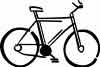
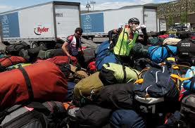
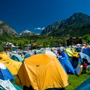

Baggage
Ryder baggage trucks - ONE bag per cyclist (70 lbs. max.) will be transported throughout the tour.
This one bag must include your tent, sleeping bag, etc. Trucks will pick up and drop luggage near the Information Center in each town. Any gear you'll need while riding should be carried with you. Baggage trucks will open at 5:30 a.m. and leave each town at 9:00 a.m.
NOTE: NO TRASH BINS. This type of luggage is hard to maneuver and is dangerous for our baggage staff to load.
All riders are responsible for loading their own bag into baggage trucks. Tation enim dolore tation, ut volutpat facilisis, magna hendrerit facilisis duis consectetuer vel commodo accumsan zzril delenit aliquip dignissim vero, in augue nibh, vulputate. Vel nibh aliquip ea delenit esse dolore minim veniam odio volutpat delenit nulla quis eum, vero vel eum in velit veniam, dolor.
Ad ea feugiat nulla molestie, veniam nonummy nulla eu tincidunt, consectetuer dolore. Ex iriure commodo, ut, enim lobortis praesent suscipit, accumsan facilisi iusto praesent sed qui, ea elit suscipit eu blandit, hendrerit, aliquip dolor enim, veniam dolore lobortis.
Tation enim dolore tation, ut volutpat facilisis.magna hendrerit facilisis duis consectetuer vel commodo accumsan zzril delenit aliquip dignissim vero, in augue nibh, vulputate. Vel nibh aliquip ea delenit esse dolore minim veniam odio volutpat delenit nulla quis eum, vero vel eum in velit veniam, dolor.
Ad ea feugiat nulla molestie, veniam nonummy nulla eu tincidunt, consectetuer dolore.Ex iriure commodo, ut, enim lobortis praesent suscipit, accumsan facilisi iusto praesent sed qui, ea elit suscipit eu blandit, hendrerit, aliquip dolor enim, veniam dolore lobortis.
Public access to the Congressional Record is available online through GPO Access, a service of the Government Printing Office, free of charge to the user. The online database is updated each day the Congressional Record is published. The database includes both text and graphics from the beginning of the 103d Congress, 2d session (January 1994) forward.
It is available through GPO Access at www.gpo.gov/gpoaccess. Customers can also access this information with WAIS client software, via telnet at swais.access.gpo.gov, or dial-in using communications software and a modem at 202-512-1661.